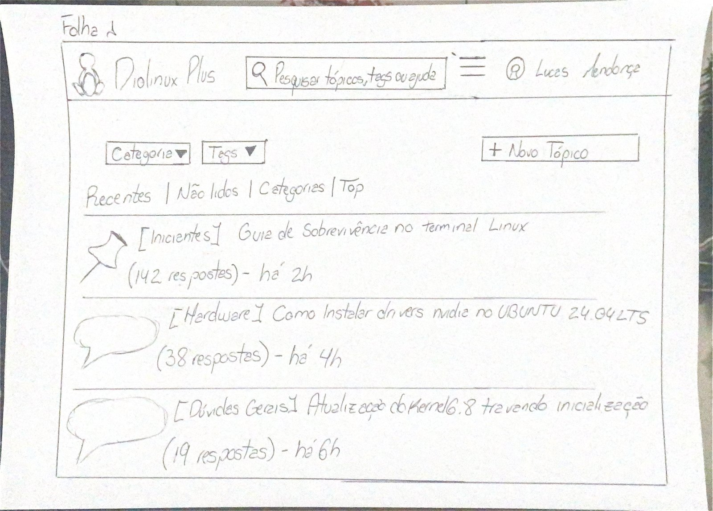
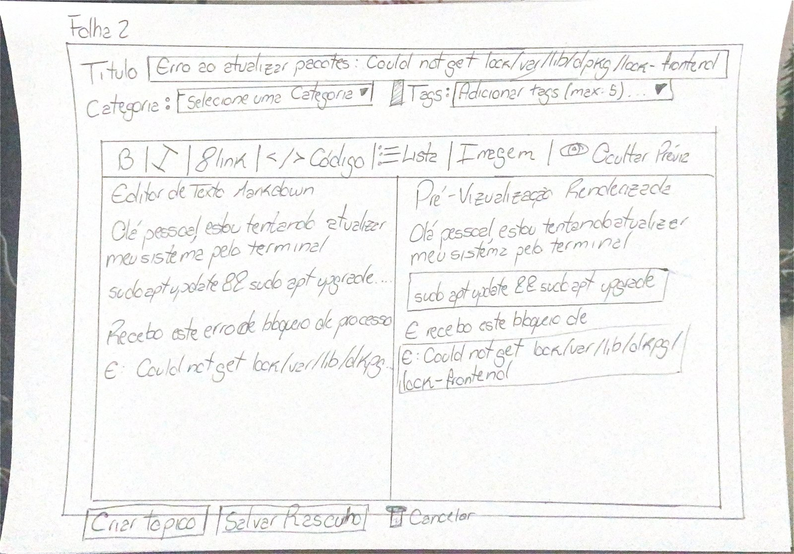
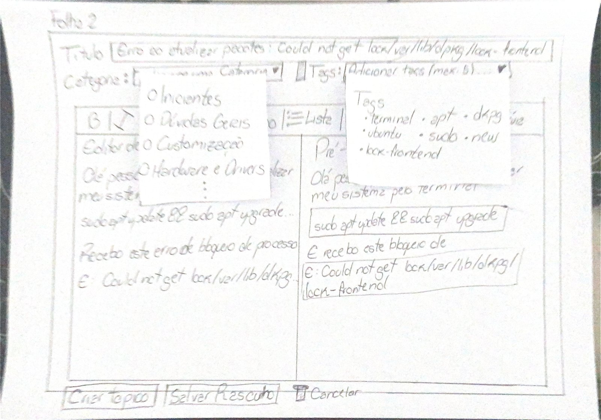
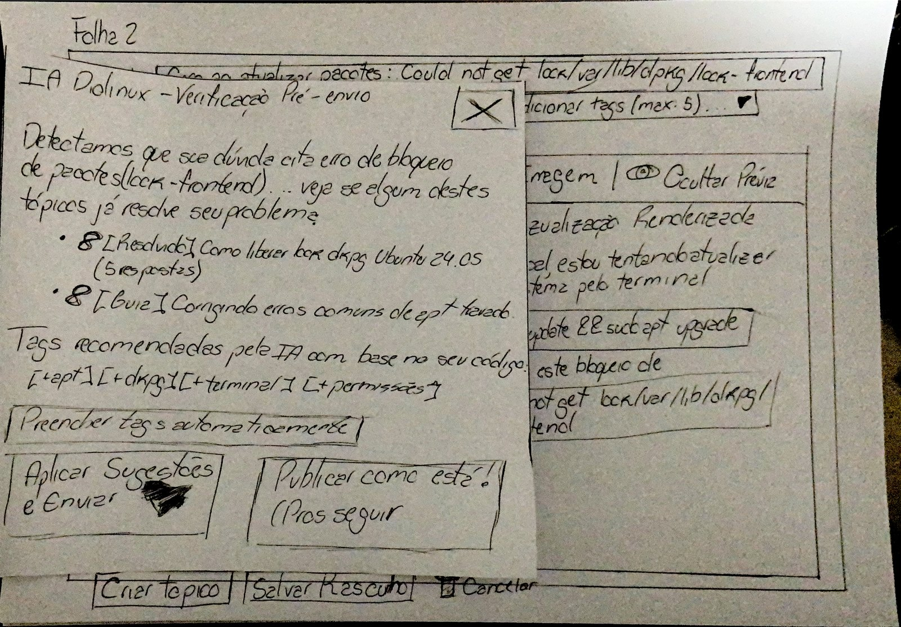
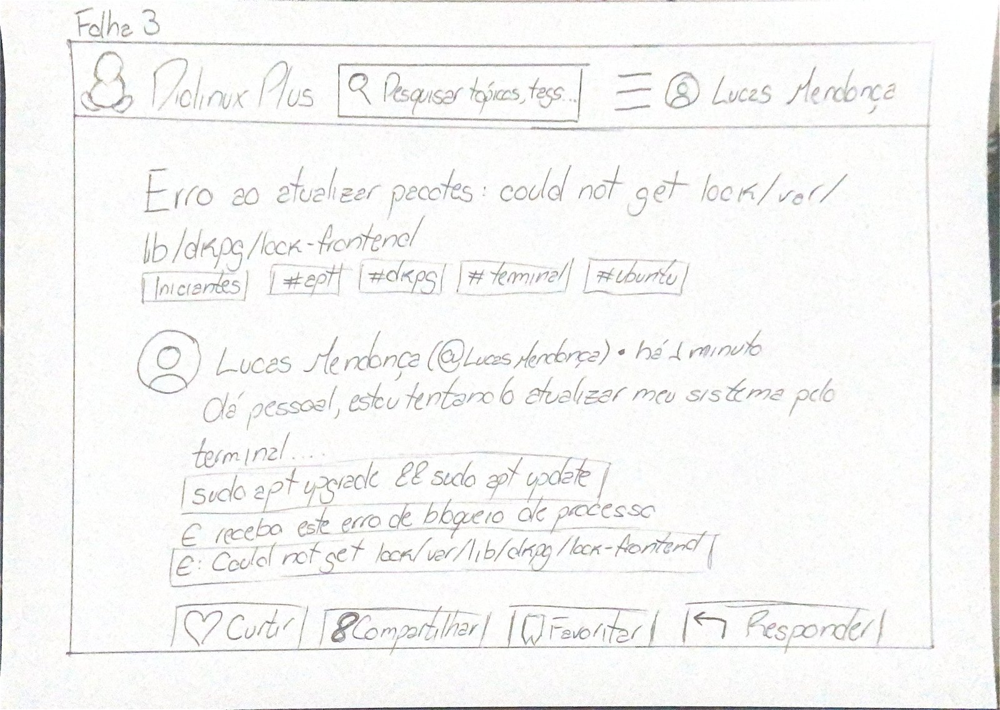

Bancada e Artefatos Físicos do Protótipo de Papel (Tarefa 1)
Tabela de Contribuição e Uso de IA Generativa
A Tabela 1 documenta a matriz de responsabilidade autoral e técnica na especificação e confecção dos artefatos físicos do Protótipo de Papel da Tarefa 1.
Tabela 1 — Matriz de Contribuição dos Artefatos Físicos do Protótipo de Papel (Tarefa 1)
| Integrante | Atribuição no Artefato | Data | Ferramenta de IA Utilizada | Propósito do Uso de IA |
|---|---|---|---|---|
| Vinicius Silva Araruna | Autor Principal / Tech Lead: Especificação arquitetural e confecção física das 3 pranchas base (Folha 1, Folha 2 e Folha 3) e 3 peças móveis sobrepostas, detalhamento do layout em modo split-view, modelagem visual do modal da IA semântica, registro fotográfico da bancada e lista de verificação de 8 itens normativos. |
30/10/2026 | Google Gemini (LLM) | Apoio na estruturação visual de tabelas Markdown e checagem de referências ABNT. |
| Gustavo Antonio Rodrigues e Silva | Revisor Designado: Auditoria de consistência das dimensões físicas, legibilidade dos wireframes de baixa fidelidade e aderência à literatura de Carolyn Snyder. | 30/10/2026 | — | Revisão humana por pares. |
| Edvaldo Soares Brasileiro Filho | Revisor Metodológico: Checagem de rastreabilidade com a Análise de Tarefas (HTA/GOMS) e conformidade com o Fórum Diolinux Plus. | 30/10/2026 | — | Revisão humana por pares. |
Fonte: Elaborada pelos autores, 2026.
1. Introdução e Contextualização do Nível 2 de Mayhew
No Ciclo de Vida de Deborah Mayhew (1999), a fase de Design, Avaliação e Desenvolvimento inicia-se no Nível 2 (Padrões de Design e Prototipação em Papel), representando a transição crítica entre as representações conceituais preliminares de Nível 1 (Storyboards e Análise de Tarefas) e a tangibilização física das soluções de interface antes de qualquer investimento em programação.
A prototipação de baixa fidelidade em papel (Paper Prototyping) é uma metodologia clássica consagrada na literatura de Interação Humano-Computador (Snyder, 2003; Rettig, 1994; Barbosa & Silva, 2021, Cap. 10). Seu propósito essencial é permitir que designers e desenvolvedores simulem interações completas de software manipulando peças físicas sobre uma mesa, investigando a disposição de elementos, fluxo de navegação, clareza de rótulos e caixas de diálogo sobrepostas (modais).
Este documento formaliza as especificações de confecção artesanal, engenharia de papel e o registro fotográfico das peças reais da bancada de testes da Tarefa 1 (CF01), sob liderança de Vinicius Silva Araruna:
Funcionalidade Central Avaliada: Criação e Publicação de Tópico de Dúvida com Tags, Formatação Markdown em Modo Split-View e Intervenção de IA Semântica Pré-Envio no Fórum Diolinux Plus (Discourse).
2. Fundamentação Teórica Canônica — Prototipagem em Papel
Autor do Item Teórico: Vinicius Silva Araruna
A prototipagem em papel fundamenta-se nas recomendações seminais de Carolyn Snyder (2003) e Marc Rettig (1994):
"O protótipo em papel é uma simulação de software em papel, onde um facilitador interage com o participante e outra pessoa da equipe atua como o 'computador', manipulando peças de papel para simular a resposta da interface às ações do usuário."
— SNYDER, Carolyn. Paper Prototyping: The Fast and Easy Way to Design and Refine User Interfaces. San Francisco: Morgan Kaufmann, 2003.
Segundo Rettig (1994) e Barbosa e Silva (2021, p. 248–252), a técnica apresenta quatro pilares determinantes para o projeto:
- Plasticidade Formativa Imediata: Por ser desenhado à mão com materiais de baixo custo, o protótipo pode ser alterado durante ou imediatamente após uma sessão de testes. Se um botão se mostrar confuso, ele pode ser riscado, recortado ou substituído em segundos;
- Redução da Inibição do Participante: Interfaces digitais bem acabadas transmitem a ilusão de que o sistema está pronto, intimidando os voluntários a apontar defeitos. O papel convida o usuário a criticar abertamente, apontar falhas de affordance e rabiscar sugestões espontâneas;
- Foco Estrutural na Arquitetura da Informação: A ausência de cores sofisticadas, tipografias digitais e animações força a atenção do estudante a se concentrar no que realmente importa: a clareza da linguagem, a ordem dos campos e a eficácia das mensagens de feedback;
- Simulação Dinâmica com o "Computador Humano": A presença de um membro da equipe atuando silenciosamente como o mecanismo de processamento do software permite simular aberturas de menus suspensos, validações de erros e caixas de diálogo modais complexas com agilidade mecânica.
3. Especificação Técnica e Materiais da Bancada de Testes
Para viabilizar a simulação ergonômica da Tarefa 1, a equipe estabeleceu os padrões físicos descritos na Tabela 2.
Tabela 2 — Especificações Técnicas dos Materiais da Bancada de Papel
| Item / Recurso | Tipo / Formato | Função Operacional na Simulação | Justificativa Ergonômica |
|---|---|---|---|
| Folhas Sulfite A4 (90g/m²) | Prancha Base (Paisagem / 297 × 210 mm) | Suporte estático para as telas de fundo do sistema (Folha 1, Folha 2 e Folha 3). |
Gramatura suficiente para não amassar durante o manuseio sobre a mesa. |
| Papel Cartão / Sulfite Recortado | Peças Móveis Sobrepostas | Cartões recortados para os menus suspensos de Categorias e Tags e para o Modal IA Diolinux - Verificação Pré-envio. |
Rigidez e independência física para deslizamento rápido e posicionamento pelo Computador Humano. |
| Notas Adesivas Reposicionáveis | Fixação Temporária | Apoio de aderência no verso dos recortes móveis sobre a Folha 2. |
Permite posicionar e remover menus sem deslocar a prancha base. |
| Lápis Grafite Escuro e Caneta | Instrumento de Desenho | Traçado à mão livre dos contornos de botões, caixas de código, ícones e rótulos textuais. | Contraste legível e estética autêntica de baixa fidelidade na filmagem a 45 graus. |
| Suporte / Tripé a 45 Graus | Registro Audiovisual | Posicionamento do smartphone focado nas pranchas e nas mãos sobre a mesa. | Captura integral dos toques sem filmar o rosto do voluntário (LGPD). |
Fonte: Elaborada pelos autores com base em Snyder (2003), 2026.
4. Arquitetura e Registro Fotográfico das Peças Físicas da Tarefa 1
O conjunto completo do protótipo da Tarefa 1 compõe-se de 3 Pranchas Base Rígidas (Folha 1, Folha 2 e Folha 3, em formato A4 paisagem) e 3 Peças Móveis Sobrepostas (cartões recortados para Categorias, Tags e Modal da IA). A Figura 1 ilustra a arquitetura de transição entre as folhas base e as peças móveis.
Figura 1 — Arquitetura e Relação entre Pranchas Base (Folhas 1 a 3) e Peças Móveis da Tarefa 1
flowchart TD
P_BASE1["Folha 1 (Prancha Base 1):<br>Tela Inicial do Diolinux Plus<br>(Botão '+ Novo Tópico')"]
P_BASE2["Folha 2 (Prancha Base 2):<br>Editor de Postagem (Composer Aberto)<br>Divisão Split-View (Editor Markdown + Pré-Visualização)"]
P_BASE3["Folha 3 (Prancha Base 3):<br>Tópico Publicado no Fórum<br>(Tags #apt #dpkg #terminal #ubuntu e Blocos de Código)"]
P_MOV1["Peça Móvel 1:<br>Menu Suspenso de Categorias<br>(Iniciantes, Dúvidas Gerais, Customização, Hardware e Drivers)"]
P_MOV2["Peça Móvel 2:<br>Menu Suspenso de Tags<br>(terminal, apt, dpkg, ubuntu, sudo, new, lock-frontend)"]
P_MOV3["Peça Móvel 3:<br>Modal 'IA Diolinux - Verificação Pré-envio'<br>(Tópicos resolvidos + 'Preencher tags automaticamente')"]
P_BASE1 -->|Toque em '+ Novo Tópico'| P_BASE2
P_BASE2 -.->|Abre seletor 'Categoria'| P_MOV1
P_BASE2 -.->|Abre seletor 'Tags'| P_MOV2
P_BASE2 -->|Toque em 'Criar tópico'| P_MOV3
P_MOV3 -->|Toque em 'Aplicar Sugestões e Enviar'| P_BASE3Fonte: Elaborada pelos autores, 2026.
4.1 Prancha Base 1 (Folha 1) — Tela Inicial do Fórum Diolinux Plus
A Folha 1 representa a página inicial da comunidade Diolinux Plus no navegador web. Seu objetivo é verificar se o usuário localiza prontamente o comando de abertura do editor de dúvidas em meio aos filtros e tópicos recentes da comunidade. A Tabela 3 detalha os componentes visuais e rótulos manuscritos presentes na Folha 1.
Tabela 3 — Componentes Visuais da Prancha Base 1 (Folha 1)
| Componente | Localização | Descrição e Rótulos Manuscritos na Folha 1 | Ação Esperada do Usuário |
|---|---|---|---|
| Barra Superior (Header) | Topo da folha | Ícone do pinguim Tux, título Diolinux Plus, campo [ 🔍 Pesquisar tópicos, tags ou ajuda ], menu [ ☰ ] e perfil 👤 Lucas Mendonça. |
Reconhecimento imediato do estado de usuário autenticado. |
| Seletores e Abas de Filtro | Abaixo do header (esq.) | Seletores [ Categoria ▼ ] e [ Tags ▼ ], seguidos das abas Recentes | Não lidos | Categorias | Top. |
Varredura visual da estrutura de navegação do Discourse. |
| Botão de Call-to-Action | Abaixo do header (dir.) | Botão retangular destacado: [ + Novo Tópico ]. |
Toque principal com o dedo: aciona o Computador Humano para substituir pela Folha 2. |
| Listagem de Tópicos | Corpo central | 1. 📌 [Iniciantes] Guia de Sobrevivência no terminal Linux (142 respostas) - há 2h2. 💬 [Hardware] Como instalar drivers nvidia no UBUNTU 24.04 LTS (38 respostas) - há 4h3. 💬 [Dúvidas Gerais] Atualização do Kernel 6.8 travando inicialização (19 respostas) - há 6h |
Contextualização realista do ecossistema colaborativo Linux. |
Fonte: Elaborada pelos autores, 2026.
A Figura 2 apresenta o registro fotográfico da Folha 1 confeccionada fisicamente para a bancada de testes.
Figura 2 — Fotografia da Prancha Base 1 (Folha 1): Tela Inicial do Fórum Diolinux Plus

Fonte: Vinicius Silva Araruna, 2026.
4.2 Prancha Base 2 (Folha 2) — Editor de Postagem (Composer) em Modo Split-View
A Folha 2 materializa o formulário de criação de tópicos do Discourse, estruturado com divisão lateral lado a lado (split-view) entre o Editor de Texto Markdown (metade esquerda) e a Pré-Visualização Renderizada (metade direita). A Tabela 4 descreve todos os campos, atalhos e textos manuscritos na Folha 2.
Tabela 4 — Componentes Visuais da Prancha Base 2 (Folha 2)
| Componente | Localização | Descrição e Rótulos Manuscritos na Folha 2 | Comportamento da Simulação |
|---|---|---|---|
| Campo de Título | Topo do Composer | Rótulo Título seguido da caixa: [ Erro ao atualizar pacotes: Could not get lock /var/lib/dpkg/lock-frontend ] |
Participante aponta o campo e verbaliza a digitação do título da dúvida. |
| Seletor de Categoria | Abaixo do título (esq.) | Rótulo Categoria: seguido de [ Selecione uma Categoria ▼ ] |
Toque aciona a sobreposição da Peça Móvel 1. |
| Seletor de Tags | Abaixo do título (dir.) | Ícone de etiqueta + Tags: seguido de [ Adicionar tags (max: 5)... ▼ ] |
Toque aciona a sobreposição da Peça Móvel 2. |
| Barra de Atalhos Markdown | Acima da área dividida | [ B | I | 🔗 Link | </> Código | ⋮≡ Lista | Imagem | 👁️ Ocultar Prévia ] |
Toque no atalho [ </> Código ] simula o isolamento sintático dos comandos de terminal. |
| Editor de Texto Markdown | Metade esquerda | Cabeçalho Editor de Texto Markdown com o texto:"Olá pessoal, estou tentando atualizar meu sistema pelo terminal" sudo apt update && sudo apt upgrade...."Recebo este erro de bloqueio de processo" E: Could not get lock /var/lib/dpkg... |
Representa a entrada bruta de texto e código pelo estudante. |
| Pré-Visualização Renderizada | Metade direita | Cabeçalho Pré-Visualização Renderizada exibindo o parágrafo e duas caixas retangulares destacadas (blocos de código):Caixa 1: [ sudo apt update && sudo apt upgrade ]Caixa 2: [ E: Could not get lock /var/lib/dpkg/lock-frontend ] |
Permite ao usuário verificar em tempo real que seus comandos ficaram destacados em blocos de código. |
| Barra de Ações Inferior | Rodapé | Botões [ Criar tópico ], [ Salvar Rascunho ] e [ 🗑️ Cancelar ] |
Toque em [ Criar tópico ] engatilha a sobreposição da Peça Móvel 3 (Modal da IA). |
Fonte: Elaborada pelos autores, 2026.
A Figura 3 apresenta a fotografia da Folha 2 confeccionada à mão com a divisão split-view entre o editor Markdown e a pré-visualização renderizada.
Figura 3 — Fotografia da Prancha Base 2 (Folha 2): Editor de Postagem em Modo Split-View

Fonte: Vinicius Silva Araruna, 2026.
4.3 Peças Móveis 1 e 2 — Menus Suspensos de Categorias e Tags Sobrepostos à Folha 2
As Peças Móveis 1 e 2 são cartões recortados independentes mantidos ao lado da bancada. Quando o voluntário toca nos seletores Categoria ou Tags da Folha 2, o Computador Humano posiciona imediatamente os recortes sobre a folha base. A Tabela 5 detalha os itens contidos em cada recorte.
Tabela 5 — Especificação das Peças Móveis 1 e 2 (Menus Suspensos)
| Peça Móvel | Local de Sobreposição | Opções Manuscritas no Recorte | Regra de Interação |
|---|---|---|---|
| Peça Móvel 1 (Menu de Categorias) | Abaixo de Categoria: [Selecione uma Categoria ▼] na Folha 2 |
• ○ Iniciantes• ○ Dúvidas Gerais• ○ Customização• ○ Hardware e Drivers• ⋮ |
Participante toca em ○ Iniciantes. O Computador Humano recolhe o menu suspenso. |
| Peça Móvel 2 (Menu de Tags) | Abaixo de Tags: [Adicionar tags (max: 5)... ▼] na Folha 2 |
Cabeçalho Tags:• terminal • apt • dpkg• ubuntu • sudo • new• lock-frontend |
Participante seleciona as tags pertinentes ao problema de bloqueio de pacotes e o Computador Humano recolhe o recorte. |
Fonte: Elaborada pelos autores, 2026.
A Figura 4 ilustra o momento exato da simulação em que as Peças Móveis 1 e 2 encontram-se sobrepostas aos campos de Categoria e Tags da Folha 2.
Figura 4 — Fotografia da Folha 2 com as Peças Móveis 1 (Menu de Categorias) e 2 (Menu de Tags) Sobrepostas

Fonte: Vinicius Silva Araruna, 2026.
4.4 Peça Móvel 3 — Modal IA Diolinux - Verificação Pré-envio Sobreposto à Folha 2
A Peça Móvel 3 materializa a intervenção assistiva de Inteligência Artificial Semântica antes da persistência do tópico. Quando o participante toca no botão [ Criar tópico ] no rodapé da Folha 2, o Computador Humano posiciona o cartão modal sobre a área de edição, apresentando tópicos resolvidos similares e recomendação automática de tags extraídas do código. Os blocos e controles do cartão são detalhados na Tabela 6.
Tabela 6 — Elementos Manuscritos na Peça Móvel 3 (Modal IA Diolinux - Verificação Pré-envio)
| Bloco do Modal | Conteúdo Manuscrito no Cartão Sobreposto | Objetivo Formativo e Investigativo |
|---|---|---|
| Cabeçalho e Fechamento | IA Diolinux - Verificação Pré-envio com botão [ X ] no canto superior direito |
Comunicar claramente a natureza assistiva da etapa de pré-envio e oferecer fechamento rápido. |
| Diagnóstico e Tópicos Similares | "Detectamos que sua dúvida cita erro de bloqueio de pacotes (lock-frontend)... veja se algum destes tópicos já resolve seu problema:" • 🔗 [Resolvido] Como liberar lock dpkg Ubuntu 24.04 (5 respostas)• 🔗 [Guia] Corrigindo erros comuns de apt travado |
Avaliar se o usuário inspeciona soluções já documentadas pela comunidade antes de abrir um tópico repetido. |
| Recomendação e Ação de 1 Toque em Tags | "Tags recomendadas pela IA com base no seu código:"[+apt] [+dpkg] [+terminal] [+permissões]Botão de ação direta: [ Preencher tags automaticamente ] |
Materialização direta da sugestão empírica do Participante P1 no Nível 1, reduzindo o esforço motor de classificação para um único toque. |
| Botões de Decisão Final | Botão 1 (esq.): [ Aplicar Sugestões e Enviar ]Botão 2 (dir.): [ Publicar como está! (Prosseguir) ] |
Preservar a liberdade e controle do usuário (Heurística 3 de Nielsen, 1994), permitindo aceitar o enriquecimento da IA ou publicar o texto original. |
Fonte: Elaborada pelos autores, 2026.
A Figura 5 apresenta o registro fotográfico da Peça Móvel 3 (IA Diolinux - Verificação Pré-envio) posicionada sobre a Folha 2 após o acionamento do botão Criar tópico.
Figura 5 — Fotografia da Peça Móvel 3 (Modal IA Diolinux - Verificação Pré-envio) Sobreposta à Folha 2

Fonte: Vinicius Silva Araruna, 2026.
4.5 Prancha Base 3 (Folha 3) — Tela de Tópico Publicado com Sucesso
Após o participante tocar em [ Aplicar Sugestões e Enviar ] no modal da IA, o Computador Humano retira a Folha 2 e apresenta a Folha 3, exibindo o tópico recém-publicado no Fórum Diolinux Plus com todas as tags aplicadas e os blocos de código formatados. A Tabela 7 sintetiza os elementos visuais da Folha 3.
Tabela 7 — Componentes Visuais da Prancha Base 3 (Folha 3)
| Componente | Descrição e Rótulos Manuscritos na Folha 3 | Critério de Sucesso Formativo |
|---|---|---|
| Cabeçalho Superior | Ícone do pinguim Tux, Diolinux Plus, [ 🔍 Pesquisar tópicos, tags... ], [ ☰ ] e 👤 Lucas Mendonça |
Consistência visual da navegação superior. |
| Título do Tópico Publicado | Erro ao atualizar pacotes: could not get lock /var/lib/dpkg/lock-frontend |
Confirmação imediata da criação do tópico. |
| Categoria e Tags Aplicadas | Chips retangulares abaixo do título: [ Iniciantes ] [ #apt ] [ #dpkg ] [ #terminal ] [ #ubuntu ] |
Comprovação visual da aplicação das tags sugeridas na etapa anterior. |
| Autoria e Corpo Renderizado | Avatar + Lucas Mendonça (@LucasMendonça) • há 1 minutoTexto introdutório e duas caixas monoespaçadas de código: 1. [ sudo apt upgrade && sudo apt update ]2. [ E: Could not get lock /var/lib/dpkg/lock-frontend ] |
Verificação da visibilidade do estado do sistema (Heurística 1 de Nielsen) e legibilidade do código. |
| Barra de Ações da Comunidade | Botões inferiores: [ ♡ Curtir ] [ 🔗 Compartilhar ] [ 🔖 Favoritar ] [ ↩ Responder ] |
Encerramento completo do fluxo da Tarefa 1. |
Fonte: Elaborada pelos autores, 2026.
A Figura 6 exibe a fotografia da Folha 3 representando o estado final do tópico publicado na comunidade.
Figura 6 — Fotografia da Prancha Base 3 (Folha 3): Tópico Publicado com Tags e Blocos de Código Formatados

Fonte: Vinicius Silva Araruna, 2026.
5. Dinâmica Operacional e Separação de Papéis na Simulação
Para garantir o rigor preconizado por Carolyn Snyder (2003), a equipe atua durante a simulação presencial com divisão estrita de responsabilidades:
- O Facilitador (Vinicius Silva Araruna):
- Acolhe o participante, faz a leitura integral do Script Oral do TCLE (< 60s) e recolhe o consentimento gravado;
- Explica que o que está sendo testado é o protótipo de papel e a clareza da interface, jamais o participante;
- Apresenta o cenário de uso da dúvida de terminal Linux e estimula o participante a pensar em voz alta (think-aloud);
- Regra de Ouro do Facilitador: Permanece com as mãos fora da bancada e não toca nas peças de papel durante a interação do voluntário.
- O "Computador Humano" (Human Computer):
- Posiciona-se silenciosamente ao lado da bancada com as
Folhas 1, 2 e 3e as 3 peças móveis organizadas em sequência; - Regra de Ouro do Computador Humano: Permanece em absoluto silêncio mecânico (não responde perguntas, não dá dicas e não explica a tela);
- Responde com agilidade mecânica (< 1s) aos toques do dedo do participante: quando o participante toca em um botão ou campo, o Computador Humano substitui a folha ou sobrepõe o cartão correspondente sobre a mesa.
- O Participante Discente (P1 — Usuário Aprendiz):
- Interage livremente com as pranchas, apontando com o dedo indicador os botões onde clicaria e simulando verbalmente o que digitaria em cada campo.
6. Lista de Verificação da Técnica (Confecção do Protótipo de Papel)
A Tabela 8 apresenta a lista de verificação com 8 critérios normativos fundamentados em Snyder (2003) e Rettig (1994) avaliando a conformidade dos artefatos físicos produzidos.
Tabela 8 — Lista de Verificação da Técnica: Confecção do Protótipo de Papel (Tarefa 1)
| Item / Questão Avaliada | Origem Normativa | Conforme? | Resposta Autoexplicativa e Evidência no Documento |
|---|---|---|---|
| 1. As pranchas base foram confeccionadas em formato padronizado e resistente? | Snyder (2003, Cap. 4) | ✅ Sim | As 3 pranchas base (Folhas 1, 2 e 3) foram desenhadas em folhas A4 paisagem e fotografadas em alta nitidez (Figuras 2, 3 e 6). |
| 2. O editor de postagem modela a divisão split-view (Markdown e Prévia)? | Padrão Discourse; Barbosa & Silva (2021) | ✅ Sim | A Folha 2 divide explicitamente o Editor de Texto Markdown à esquerda e a Pré-Visualização Renderizada à direita (Figura 3). |
| 3. Há peças móveis recortadas para elementos dinâmicos (menus e modais)? | Rettig (1994); Snyder (2003) | ✅ Sim | Foram confeccionados 3 recortes móveis independentes para Categorias, Tags e Modal da IA (Figuras 4 e 5). |
| 4. O Modal da IA Semântica de Pré-Envio foi modelado como cartão sobreposto? | Snyder (2003); Decisões de Design da Equipe | ✅ Sim | A Peça Móvel 3 (IA Diolinux - Verificação Pré-envio) sobrepõe-se à Folha 2 ao acionar Criar tópico (Figura 5). |
| 5. O modal de IA incorpora a recomendação empírica real de tags com 1 clique? | Relato da Avaliação do Storyboard (Nível 1); Nielsen (1994) | ✅ Sim | A Peça Móvel 3 inclui o botão [ Preencher tags automaticamente ] derivado dos achados empíricos de Nível 1 (Tabela 6 e Figura 5). |
| 6. Há garantia expressa de liberdade e controle ao usuário na intervenção de IA? | Heurística 3 de Nielsen (1994) | ✅ Sim | O modal oferece o botão [ Publicar como está! (Prosseguir) ] e o botão [ X ] de fechamento (Figura 5). |
| 7. A tela de tópico publicado confirma a persistência e o destaque de código? | Barbosa & Silva (2021, Cap. 10) | ✅ Sim | A Folha 3 exibe o post consolidado com os chips [Iniciantes] [#apt] [#dpkg] [#terminal] [#ubuntu] e caixas de código (Figura 6). |
| 8. O protocolo prevê a separação rígida entre Facilitador e Computador Humano? | Snyder (2003, Cap. 3) | ✅ Sim | A Seção 5 estipula as regras de conduta neutra do facilitador e silêncio mecânico do computador humano. |
Fonte: Vinicius Silva Araruna com base em Snyder (2003), Rettig (1994) e Barbosa & Silva (2021), 2026.
7. Histórico de Versão
A Tabela 9 documenta o histórico de versões deste artefato.
Tabela 9 — Histórico de Versão do Documento
| Versão | Data | Descrição Detalhada da Modificação | Autor(es) | Revisor(es) |
|---|---|---|---|---|
1.0 |
30/10/2026 | Elaboração inicial da especificação dos artefatos físicos do Protótipo de Papel da Tarefa 1 (Markdown e IA Semântica), detalhando as 3 pranchas base A4 (Folhas 1, 2 e 3), 3 peças móveis recortadas, registro fotográfico real da bancada (Figuras 2 a 6), modal inteligente de pré-envio com botão de preenchimento automático de tags, dinâmica de Facilitador/Computador Humano e checklist normativo de 8 itens. |
Vinicius Silva Araruna | Gustavo Antonio, Edvaldo Soares |
Fonte: Elaborada pelos autores, 2026.
8. Referências Bibliográficas (ABNT)
- BARBOSA, Simone Diniz Junqueira; SILVA, Bruno Santana da; SILVEIRA, Milene Selbach; GASPARINI, Isabela; DARIN, Ticianne; BARBOSA, Gabriel Diniz Junqueira. Interação Humano-Computador e Experiência do Usuário. Rio de Janeiro: Autopublicação, 2021. ISBN 978-65-00-19677-1. (Capítulo 10: Prototipação, p. 248-255).
- MAYHEW, Deborah J. The Usability Engineering Lifecycle: a practitioner's handbook for user interface design. San Francisco: Morgan Kaufmann Publishers, 1999.
- NIELSEN, Jakob. Usability Engineering. San Francisco: Morgan Kaufmann Publishers, 1994.
- RETTIG, Marc. Prototyping for tiny fingers. Communications of the ACM, v. 37, n. 4, p. 21-27, 1994.
- SALES, André Barros de. Plano de Ensino da Disciplina de Interação Humano Computador. Brasília: Universidade de Brasília, Faculdade UnB Gama (FGA), 2026.
- SNYDER, Carolyn. Paper Prototyping: The Fast and Easy Way to Design and Refine User Interfaces. San Francisco: Morgan Kaufmann Publishers, 2003.
Agradecimentos e Uso de Inteligência Artificial (IA) Generativa
Durante a estruturação do layout em Markdown e organização das tabelas descritivas das peças físicas de papel, foi utilizado suporte de Inteligência Artificial Generativa (LLM), tendo toda a confecção manuscrita das pranchas (Folhas 1, 2 e 3), recortes móveis, fotografia da bancada e listas de verificação sido realizada e validada pelo autor.